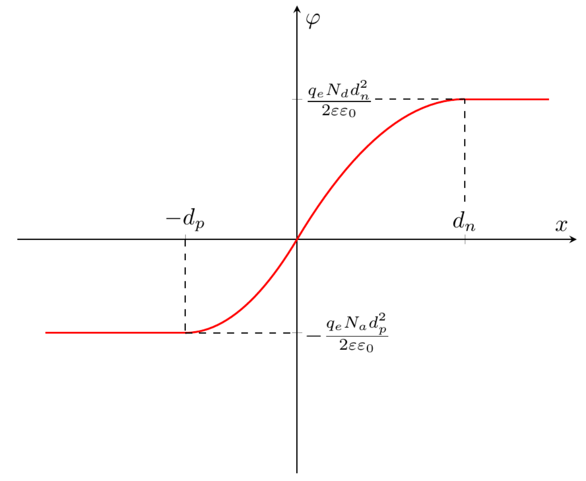
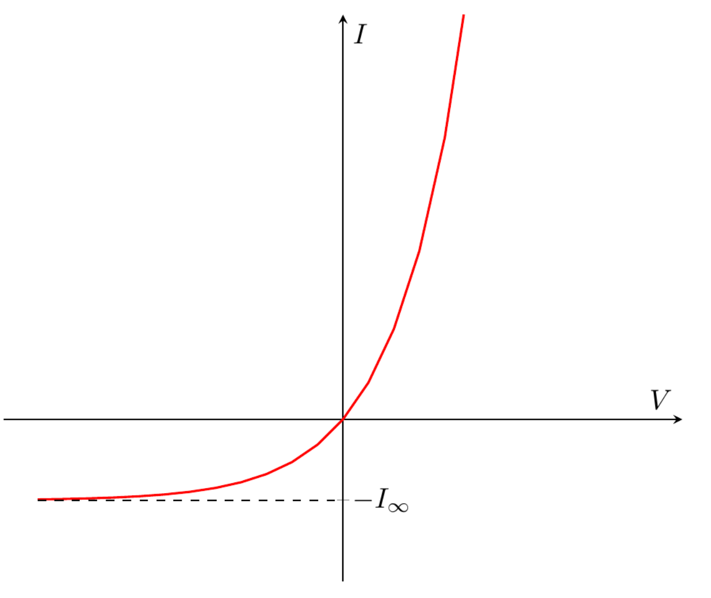

A1.0.5pt 접합 근처의 총전하는 0이어야 한다. 이 사실을 이용하여 공핍층 너비 $d_n$, $d_p$와 불순물 농도 $N_a$, $N_d$를 연결하는 식을 써라.
접촉 면적을 $A$라 하자. 부피 전하 밀도는 $\rho = \pm q_e N_{a,d}$(정공은 $+$, 전자는 $-$)이므로, 정공과 전자의 총전하가 0이 된다는 조건은 $AN_ad_p = AN_dd_n$을 뜻한다. 따라서
A2.0.5pt 전기장에 대해 다음 식이 성립함을 보여라 $$\frac{dE_x}{dx} = \frac{\rho}{\varepsilon_0\varepsilon},$$ 여기서 $\rho$는 해당 점에서의 부피 전하 밀도이다.
미분형 가우스 법칙에 따르면
$$\mathrm{div}\vec E = \frac{\rho}{\varepsilon_0\varepsilon}.$$$\vec E = \vec E(x)$이므로
$$\mathrm{div}\vec E = \frac{dE_x}{dx}$$이고, 이로써 주어진 식이 증명된다.
A3.1.0pt 전기장 $E_x(x)$를 $x$의 함수로 구하라. 접합에서 멀리 떨어진 곳에서 장이 0이라고 가정한다. 답을 $N_a$, $N_d$, $d_n$, $d_p$, $\varepsilon$, $\varepsilon_0$, $q_e$로 나타내라.
A2의 결과와 함께, 농도와 부피 전하 밀도 사이의 관계 $\rho = \pm q_eN_{a,d}$(정공은 $+$, 전자는 $-$)를 이용하면 다음을 얻는다.
$$\frac{dE_x}{dx} = \begin{cases} -\dfrac{q_eN_a}{\varepsilon_0\varepsilon}, & -d_p \le x \le 0,\\[2mm] \dfrac{q_eN_d}{\varepsilon_0\varepsilon}, & 0 < x \le d_n,\\[2mm] 0, & x < -d_p \text{ 또는 } x > d_n.\end{cases}$$이제 부정적분을 구하고 적분 상수를 정하면 된다. 답을 더 빨리 얻기 위해 정적분을 직접 계산하자. $E_x(\pm\infty) = 0$이므로
$$E_x(x) = \int_{-\infty}^{x}E'(x)\,dx = -\int_{x}^{+\infty}E'(x)\,dx.$$이 관계들을 이용하면 최종 답을 얻는다.
A4.1.0pt 정전기 퍼텐셜 $\varphi(x)$를 $x$의 함수로 구하라. $\varphi(0) = 0$으로 가정한다. 답을 $N_a$, $N_d$, $d_n$, $d_p$, $\varepsilon$, $\varepsilon_0$, $q_e$로 나타내라. 접합에서 먼 거리에서의 퍼텐셜 차이 $\Delta\varphi = \varphi(x = +\infty) - \varphi(x = -\infty)$를 구하라.
1차원에서는 $\varphi'(x) = -E_x(x)$이다. $\varphi(0) = 0$ 조건을 이용하면 정전기 퍼텐셜을 다음과 같이 나타낼 수 있다.
$$\varphi(x) = -\int_0^x E_x(x)\,\mathrm{d}x.$$적분을 직접 계산하면 다음을 얻는다.
A5.0.5pt 퍼텐셜 $\varphi(x)$를 $x$의 함수로 정성적으로 그려라.

A6.1.0pt 사실 퍼텐셜 차이는 물질의 성질과 온도로 결정된다. 퍼텐셜 차이를 알면 공핍층 너비를 계산할 수 있다. 너비 $d_n$, $d_p$를 $\Delta\varphi$, $N_a$, $N_d$, $\varepsilon$, $\varepsilon_0$, $q_e$로 나타내라. $\Delta\varphi = 0.8~\mathrm{V}$에 대해 수치를 계산하라.
A4로부터
$$\Delta\varphi = \frac{q_e\left(N_ad_p^2 + N_dd_n^2\right)}{2\varepsilon\varepsilon_0}.$$A1에서 얻은 식 $N_ad_p = N_dd_n$을 이용하면
$$\Delta\varphi = \frac{q_e\left(N_ad_p^2 + \frac{N_a^2}{N_d}d_p^2\right)}{2\varepsilon\varepsilon_0} = \frac{q_eN_a(N_a+N_d)d_p^2}{2\varepsilon\varepsilon_0N_d}.$$마찬가지로
$$\Delta\varphi = \frac{q_e\left(\frac{N_d^2}{N_a}d_n^2 + N_dd_n^2\right)}{2\varepsilon\varepsilon_0} = \frac{q_eN_d(N_a+N_d)d_n^2}{2\varepsilon\varepsilon_0N_a}$$이고, 이로부터 답을 얻는다.
A7.0.5pt 접합에서 전기장의 최댓값 $E_{\max}$를 구하라. 답을 $\Delta\varphi$, $N_a$, $N_d$, $\varepsilon$, $\varepsilon_0$, $q_e$로 나타내라. $\Delta\varphi = 0.8~\mathrm{V}$에 대해 수치를 계산하라.
A3에서 얻은 $E_x(x)$로부터, 전기장 절댓값의 최댓값은 $x = 0$에서 얻어지며 그 값은 다음과 같다.
$$E_{\max} = \frac{q_eN_ad_p}{\varepsilon\varepsilon_0}.$$A6에서 얻은 $d_p$의 식을 대입하면 다음을 얻는다.
B1.0.5pt 외부 전압이 없을 때 $p$형 반도체에서 전자 농도를 $n_{10}$, $n$형 반도체에서 정공 농도를 $p_{10}$이라 하자. 전압 $V$를 가한 뒤 $p$형 반도체에서 전자 농도 $n_1$과 $n$형 반도체에서 정공 농도 $p_1$을 구하라. 전기장이 0인 공핍층 바깥 영역을 생각한다. 답을 $p_{10}$, $n_{10}$, $V$, $T$, $k$, $q_e$로 나타내라.
$n(x)$의 분포식으로부터 다음이 성립한다.
$$\frac{n(x=+\infty)}{n(x=-\infty)} = \exp\left(-\frac{U_n(x=+\infty) - U_n(x=-\infty)}{kT}\right)$$전압을 가하기 전에는 $n(x=+\infty) = N_d$, $n(x=-\infty) = n_{10}$이다. 전압을 가하면 전자 하나의 위치 에너지 차이 $U_n(x=+\infty) - U_n(x=-\infty)$는 $(-q_e)\cdot(-V) = q_eV$만큼 변한다. 문제의 본문에 따르면 $n$형 반도체의 전자 농도는 전압과 무관하게 $N_d$이다. 따라서 전압을 가한 뒤에도 $n(x=+\infty) = N_d$이지만, $n(x=-\infty) = n_1$이 된다. 따라서
$$\frac{N_d}{n_1} = \exp\left(-\frac{q_eV}{kT}\right)\cdot\frac{N_d}{n_{10}},$$이고, 이로부터
$$n_1 = n_{10}\cdot\exp\left(\frac{q_eV}{kT}\right).$$$p_1$에 대한 식도 같은 방법으로 얻을 수 있다. $p(x)$의 분포식으로부터 다음이 성립한다.
$$\frac{p(x=+\infty)}{p(x=-\infty)} = \exp\left(-\frac{U_p(x=+\infty) - U_p(x=-\infty)}{kT}\right).$$전압을 가하기 전에는 $p(x=+\infty) = p_{10}$, $p(x=-\infty) = N_a$이다. 전압을 가하면 정공 하나의 위치 에너지 차이 $U_p(x=+\infty) - U_p(x=-\infty)$는 $q_e\cdot(-V) = -q_eV$만큼 변한다. 문제의 본문에 따르면 $p$형 반도체의 정공 농도는 $N_a$이므로, 전압을 가한 뒤에도 $p(x=-\infty) = N_a$이지만 $p(x=+\infty) = p_1$이 된다. 따라서
$$\frac{p_1}{N_a} = \exp\left(\frac{q_eV}{kT}\right)\cdot\frac{p_{10}}{N_a},$$이고, 이로부터
$$p_1 = p_{10}\cdot\exp\left(\frac{q_eV}{kT}\right).$$B2.1.0pt 좌표 $x$와 $x + \Delta x$인 평면 사이의 부피를 생각하자(그림 3). 이 부피에서 정공 농도가 변하지 않는다는 조건을 써라. 두 평면을 통과하는 정공 플럭스와 정공 재결합을 고려하라. $\Delta x \to 0$인 극한에서, 평형값으로부터의 농도 편차 $\Delta p = p_1 - p_{10}$에 대한 $x$의 함수로서의 미분 방정식을 구하라. 답에는 $D_p$와 $\tau_p$도 포함될 수 있다.
$n$형 반도체의 단면적을 $A$라 하자. 짧은 시간 $\Delta t$ 동안, 고려하는 작은 부피 안에서 정공 수의 변화를 계산하자. 재결합으로 인한 변화는 $\left(\frac{dp_1}{dt}\right)_{\mathrm{rec}}A\Delta x\Delta t$이다. 두 평면을 통한 확산으로 인한 변화는 $J_p(x)A\Delta t$(좌표 $x$에서)와 $-J_p(x+\Delta x)A\Delta t$(좌표 $x+\Delta x$에서)이다. 정공의 총수, 따라서 농도는 일정하므로 전체 변화는 0이어야 한다.
$$\left(\frac{dp_1}{dt}\right)_{\mathrm{rec}}A\Delta x\Delta t + J_p(x)A\Delta t - J_p(x+\Delta x)A\Delta t = 0.$$따라서 다음을 얻는다.
$$\left(\frac{dp_1}{dt}\right)_{\mathrm{rec}} = \frac{J_p(x+\Delta x) - J_p(x)}{\Delta x} = \frac{dJ_p(x)}{dx} = -D_p\frac{d^2p_1}{dx^2}.$$$\Delta p$와 $p_1$은 상수만큼만 다르므로
$$\frac{d^2p_1}{dx^2} = \frac{d^2\Delta p}{dx^2}.$$다음 식을 고려하면
$$\left(\frac{dp_1}{dt}\right)_{\mathrm{rec}} = -\frac{\Delta p}{\tau_p}$$다음을 얻는다.
B3.0.6pt 정공 농도의 평형으로부터의 편차가 $e$배 감소하는 거리 $L_p$를 구하라. 답을 $D_p$, $\tau_p$로 나타내라. $D_p = 1.0\cdot 10^{-3}~\mathrm{m^2/s}$, $\tau_p = 5.0\cdot 10^{-7}~\mathrm{s}$에 대해 수치를 계산하라.
B2에서 얻은 방정식의 일반해는 다음 꼴이다.
$$\Delta p = a\exp\left(-\frac{x}{\sqrt{\tau_pD_p}}\right) + b\exp\left(\frac{x}{\sqrt{\tau_pD_p}}\right),$$여기서 $a$, $b$는 계수이다. $x \to +\infty$일 때 정공 농도는 평형값 $p_{10}$에 가까워져야 하므로 $\Delta p \to 0$이고, 따라서 $b = 0$이다. 그러므로
$$\Delta p \sim \exp\left(-\frac{x}{\sqrt{\tau_pD_p}}\right),$$이고, $\Delta p$는 $x$가 다음만큼 변할 때 $e$배 변한다.
B4.0.8pt 영역 $x > d_n$(공핍층 바깥 $n$형 반도체)에서 정공 농도 $p_1(x)$를 좌표의 함수로 구하라. 답을 $p_{10}$, $V$, $T$, $L_p$, $d_n$, $k$, $q_e$로 나타내라.
B3에서 얻은 $\Delta p$의 식으로부터, $x > d_n$에 대해 다음을 얻는다.
$$p_1(x) = p_{10} + a\exp\left(-\frac{x}{L_p}\right),$$여기서 $a$는 어떤 계수이다. 공핍층 안에서 농도 $p(x)$는 볼츠만 분포를 따른다. 따라서
$$\frac{p(d_n)}{p(-d_p)} = \exp\left(-\frac{U_p(d_n) - U_p(-d_p)}{kT}\right).$$문제의 본문에 따르면 공핍층 바깥의 전기장은 0으로 볼 수 있으므로, 전압 변화는 모두 영역 $-d_p \le x \le d_n$ 안에서 일어난다. 따라서 전압을 가하면 정공 하나의 위치 에너지 차이 $U_p(d_n) - U_p(-d_p)$는 $-q_eV$만큼 변하고, B1에서와 마찬가지로 다음과 같이 쓸 수 있다.
$$\frac{p_1(d_n)}{N_a} = \exp\left(\frac{q_eV}{kT}\right)\frac{p_{10}}{N_a},$$이로부터
$$p_1(d_n) = \exp\left(\frac{q_eV}{kT}\right)p_{10} = p_{10} + a\exp\left(-\frac{d_n}{L_p}\right),$$이므로
$$a = p_{10}\left(\exp\left(\frac{q_eV}{kT}\right) - 1\right)\exp\left(\frac{d_n}{L_p}\right).$$B5.0.8pt 공핍층 경계 $x = d_n$에서 정공 확산 전류 밀도 $j_p$를 구하라. 답을 $p_{10}$, $V$, $L_p$, $D_p$, $T$, $k$, $q_e$로 나타내라.
정공 전류를 계산하기 위해, 공핍층 경계 근처의 $n$형 영역을 생각하자. 여기서 정공의 플럭스는 확산으로 결정된다.
$$\begin{aligned}J_p = -D_p\frac{dp_1}{dx} &= \frac{D_pp_{10}}{L_p}\left(\exp\left(\frac{q_eV}{kT}\right) - 1\right)\exp\left(-\frac{x - d_n}{L_p}\right)\bigg|_{x=d_n}\\ &= \frac{D_pp_{10}}{L_p}\left(\exp\left(\frac{q_eV}{kT}\right) - 1\right).\end{aligned}$$전류 밀도는 $j_p = q_eJ_p$이므로 다음을 얻는다.
B6.0.8pt 접합 단면적은 $A$이다. 접합을 통과하는 총전류 $I$를 인가 전압 $V$, 반도체 매개변수 $N_a$, $N_d$, $\tau_p$, $\tau_n$, $D_p$, $D_n$, $n_i$, 상수 $k$, $q_e$의 함수로 유도하라.
B5와 마찬가지로, 전자 전류의 식은 다음 꼴이다.
$$j_n = \frac{q_eD_nn_{10}}{L_n}\left(\exp\left(\frac{q_eV}{kT}\right) - 1\right).$$다음을 고려하면
$$p_{10} = \frac{n_i^2}{N_d},\qquad n_{10} = \frac{n_i^2}{N_a},$$구하는 전류는 정공 전류와 전자 전류의 합으로 다음과 같다.
$$I = q_eAn_i^2\left(\exp\left(\frac{q_eV}{kT}\right) - 1\right)\left(\frac{D_p}{L_pN_d} + \frac{D_n}{L_nN_a}\right).$$B3의 답을 이용하면 다음을 얻는다.
B7.0.3pt 이전 문제에서 얻은 관계 $I(V)$의 정성적 그래프를 그려라.

B8.0.2pt 큰 음전압에서의 포화 전류 $I_\infty$와 $V = 0.7~\mathrm{V}$에서의 전류 $I_1$의 수치를 계산하라.
포화 전류는 다음과 같다.
$$I_\infty = q_eAn_i^2\left(\frac{1}{N_d}\sqrt{\frac{D_p}{\tau_p}} + \frac{1}{N_a}\sqrt{\frac{D_n}{\tau_n}}\right) = 5.77\cdot 10^{-16}~\mathrm{A},$$$V = 0.7~\mathrm{V}$에서의 전류는 $I_1 = 3.23\cdot 10^{-4}~\mathrm{A}$이다.
역자 주: 원문(채점 기준 포함)의 수치는 $n_i = 1.5\cdot 10^{16}~\mathrm{m^{-3}}$에 해당한다. 문제에 주어진 $n_i = 1.0\cdot 10^{16}~\mathrm{m^{-3}}$을 쓰면 $I_\infty \approx 2.56\cdot 10^{-16}~\mathrm{A}$, $I_1 \approx 1.44\cdot 10^{-4}~\mathrm{A}$이다.